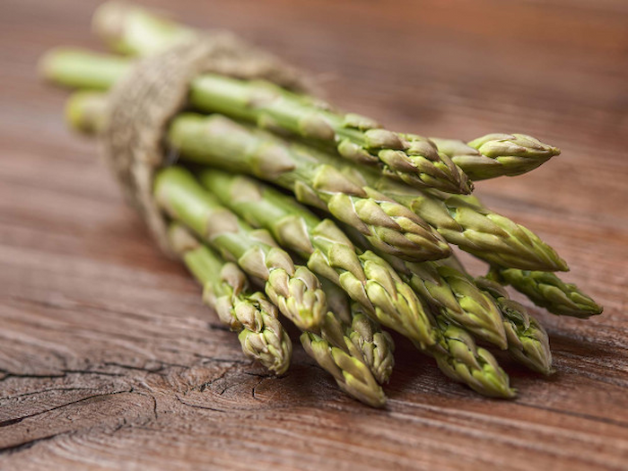

Inapoi la pagina principala
Lecție de pronunție și scriere
Pronuntă cuvantul
asparagus

sparanghel
Click pe imagine pentru a auzi pronunția
Începe să vorbești
Exersează scrierea
Exersează scrierea
Scrie cuvântul pe care l-ai auzit:
Ascultă din nou
Verifică scrierea
Următorul cuvânt
Înapoi la pronunție